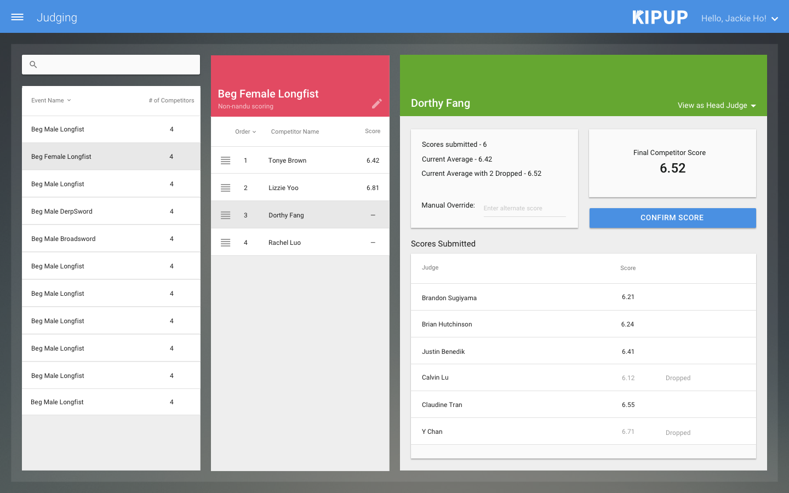
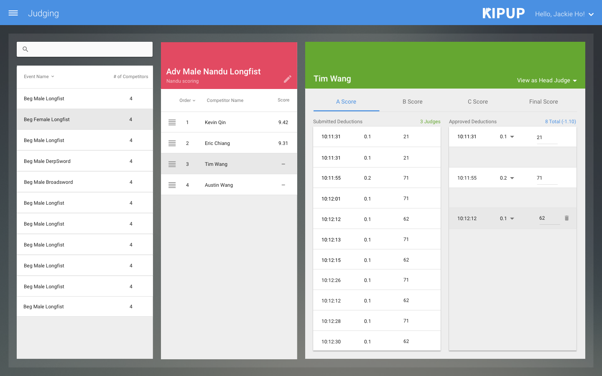
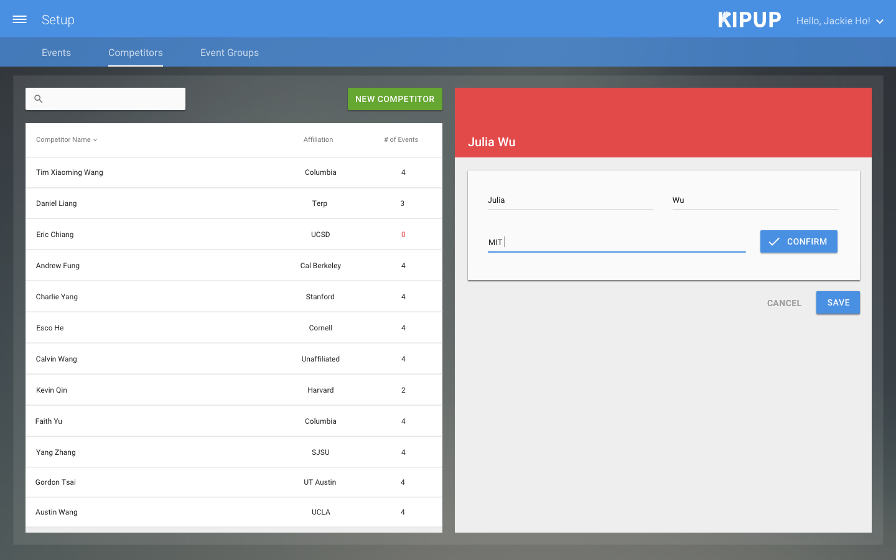
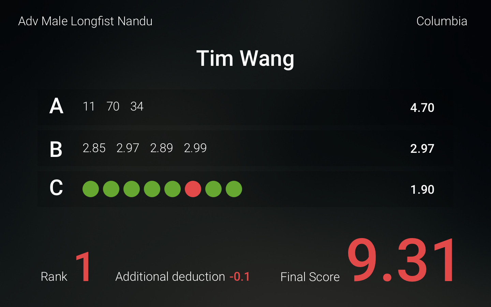

WEB AND UIUX
WEB AND UIUX

 WEB AND UIUX
WEB AND UIUX

Problem: After years of attending Wushu (Chinese martial arts) competitions that ran painfully overtime, we saw an opportunity to contribute to the wushu community -- better software. In October 2016 when Columbia University won the bid for the 20th Annual Collegiate Wushu Tournament, we immediately began work on a new judging application, affectionately named Kipup.
Execution: Wushu is scored similarly to ice skating--there are technical moves that receive various point values, timed deductions, as well as artistic/performance scores. By applying user-centered design to our application, we uncovered their pain points beyond simply building features to accomplish the technicalities of judging. We even ran a usability session where we had around 12 judges use the application at the same time to simulate a real-life judging situation. (It's complicated!)
I couldn't have asked for better teammates than user-centered, full-stack engineers, Jonathan Balsano and Daron Lin. In 6 months, we interviewed judges, designed, built, user tested, and shipped our application.
Starting up and shutting down a company: After a smashing success of a debut at Collegiates 2016, we continued to add new features. Six months after our first competition, we ran our second -- the 2016 University Wushu Games at the University of Maryland. Before we knew it, we were running another collegiate wushu competition, this time entirely remotely. We trained students from the University of Washington to run their competition using our software over several video calls. Around the same time, we legitimized our side project and turn it into a real company- Kipup became an S Corp and we were founders!
However things did not end up taking off as we had expected. We wanted to sell our product and our time at a price we felt was fair, but unfortunately there just isn't a lot of money in the Wushu sport. We had inspired others in the Wushu community to build their own judging applications and we couldn't compete with their offering the software cheap or free. Sadly in 2019 we decided to close down Kipup the corporation.
Even though we weren't able to realize our grand vision for Kipup, we like to think that we set a standard in the Wushu community for what a smooth and efficient competition can look like and raised the bar for all other judging applications out there -- that a great user experience is essential for a quick turnaround and happy judges. And Kipup is hardly dead -- we're ready to spin up the app and run another competition any day.
Tools/Tech Stack: Sketch, Backbone.js, Node.js, Postgres, Socket.io
   {kind=link}
{kind=link}
{kind=link}
{kind=link}
{kind=link}